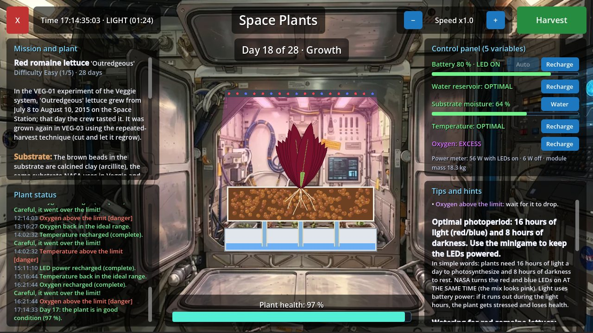
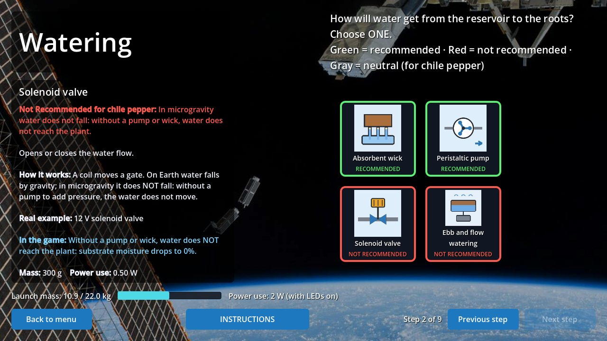
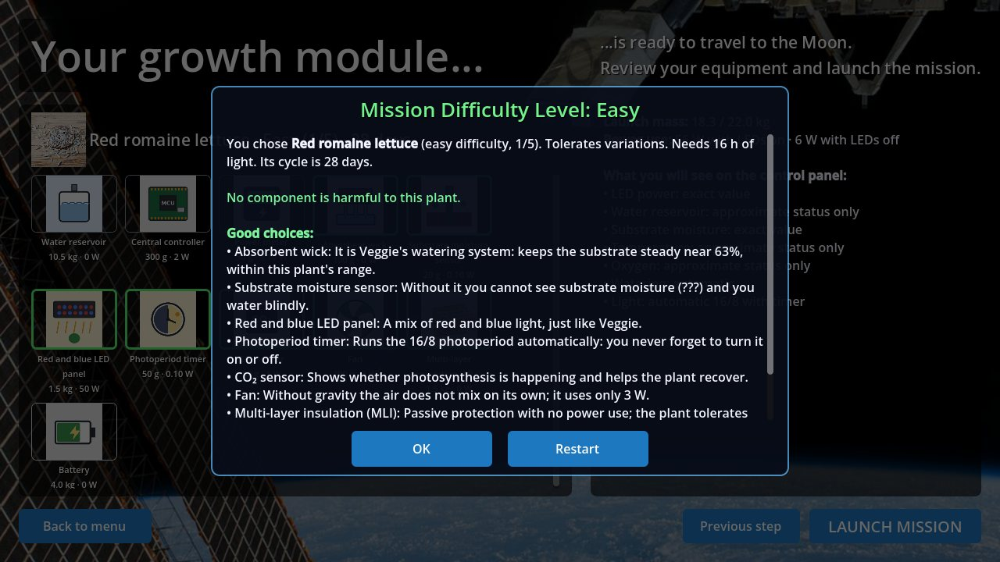
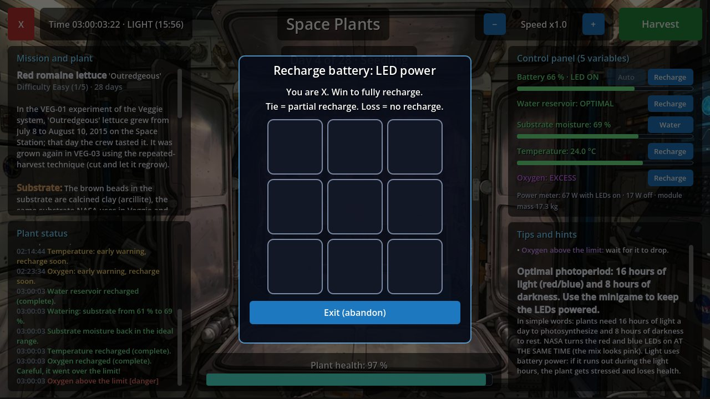

SpacePlants
Lab
A web game where you design, grow and harvest real NASA plants inside a space module. Every decision matters: if the plant survives, so does your mission.
To reach Mars, we first have to learn to grow food.
The farther we travel, the less we can rely on Earth. Growing food in space is hard: without gravity water doesn't fall, air doesn't circulate on its own, and every watt counts.
is what Veggie uses for lights, fans and electronics.
lasted the chile pepper experiment on the Station, the longest plant study.
Artemis II record distance (April 2026): humans never went farther.
A serious game where you are the mission engineer.
Choose the seed
5 real plants, from easy to hard.
Design your module
9 component categories · mass in kg · power in W.
Grow in real time
5 live variables and a 16-hour light photoperiod.
Play to recharge
Each variable is restored with its own minigame.
Harvest on time
You win only if the plant is healthy: over 80% health.

Only plants NASA has already harvested in space.
Each one has its own ideal humidity, temperature and light range, and a different difficulty.
Absorbent wick
Veggie's passive watering, no pumps.
Arcillite
Calcined clay that holds water and air.
Red + blue light
Mixed at the same time, as NASA does.
Grows and wilts
Each species grows with its real shape.
Every component is an engineering decision.
Recommended
Optimal for your plant, with reasonable power use.
Not recommended
Harmful, useless, or uses too much power.
Neutral
Works, but with a cost or a drawback.


5 variables. 5 minigames.

Every harvest in space starts with a good decision.
SpacePlants Lab turns NASA's plant-growth science into an experience anyone can play in a web browser.
Learning through play
Real space science for students of any age.
5 minigames
Spacecraft, pioneers, planets and aliens in one game.
NASA data
Veggie, Plant Habitat, Artemis and real missions.
Mission design
Answers the Space Mission Design Game challenge.
Thank you!
SpacePlants Lab Team · Space Apps 2026.